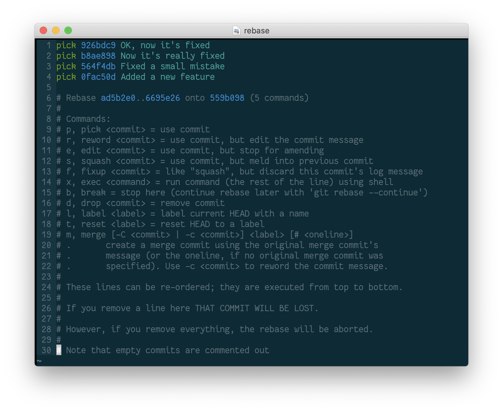

Using interactive rebase to ensure a clean git history¶

The problem¶
Sometimes, when working on a feature branch, your commit history can get messy. If your log looks like this:
1 2 3 4 | 926bdc9 - 8 minutes ago : OK, now it's fixed b8ae898 - 10 minutes ago : Now it's really fixed 564f4db - 15 minutes ago : Fixed a small mistake 0fac50d - 20 minutes ago : Added a new feature |
you should consider revising your commit history before pushing to a remote repo. To do this, you can do an interactive rebase.
Rebasing¶
Rebasing is a git tool for rewriting your commit history. Using rebase, you
can squash multiple commits together into one, resulting in a cleaner commit
history that looks like this:
1 | 926bdc9 - 8 minutes ago : Added a new feature
|
To do this, run:
1 | git rebase -i HEAD~4 |
The -i flag runs the rebase interactively, and HEAD~4 means that the rebase
will allow you to edit the last 4 commits. This command will open up an
interactive rebase vim window with the following:
1 2 3 4 5 6 7 8 9 10 11 12 13 14 15 16 17 18 19 20 21 22 23 24 25 26 27 28 29 30 | pick 926bdc9 OK, now it's fixed pick b8ae898 Now it's really fixed pick 564f4db Fixed a small mistake pick 0fac50d Added a new feature # Rebase ad5b2e0..6695e26 onto 559b098 (5 commands) # # Commands: # p, pick <commit> = use commit # r, reword <commit> = use commit, but edit the commit message # e, edit <commit> = use commit, but stop for amending # s, squash <commit> = use commit, but meld into previous commit # f, fixup <commit> = like "squash", but discard this commit's log message # x, exec <command> = run command (the rest of the line) using shell # b, break = stop here (continue rebase later with 'git rebase --continue') # d, drop <commit> = remove commit # l, label <label> = label current HEAD with a name # t, reset <label> = reset HEAD to a label # m, merge [-C <commit> | -c <commit>] <label> [# <oneline>] # . create a merge commit using the original merge commit's # . message (or the oneline, if no original merge commit was # . specified). Use -c <commit> to reword the commit message. # # These lines can be re-ordered; they are executed from top to bottom. # # If you remove a line here THAT COMMIT WILL BE LOST. # # However, if you remove everything, the rebase will be aborted. # # Note that empty commits are commented out |
To squash all four of these commits into one, pick the top commit, and
squash the lower three:
1 2 3 4 | pick 926bdc9 OK, now it's fixed squash b8ae898 Now it's really fixed squash 564f4db Fixed a small mistake squash 0fac50d Added a new feature |
Then exit the rebase window with :wq. This will open a new vim window where
you can view and edit the commit messages of the commits you are rebasing:
1 2 3 4 5 6 7 8 9 10 11 12 13 14 15 16 17 18 19 20 21 22 23 24 25 26 27 28 29 30 31 32 33 34 | # This is a combination of 5 commits. # This is the 1st commit message: Added a new feature # This is the commit message #2: Fixed a small mistake # This is the commit message #3: Now it's really fixed # This is the commit message #4: OK, now it's fixed # Please enter the commit message for your changes. Lines starting # with '#' will be ignored, and an empty message aborts the commit. # # Date: Sun Nov 24 22:05:15 2019 -0600 # # interactive rebase in progress; onto ad5b2e0 # Last commands done (5 commands done): # squash 559b098 4 # squash 6695e26 5 # No commands remaining. # You are currently rebasing branch 'feature/DAT-2701_cool_new_feature' on 'ad5b2e0'. # # Changes to be committed: # new file: a.txt # new file: b.txt # new file: c.txt # new file: d.txt |
You can delete everything above the #Please enter line and rewrite a new
commit message, and then :wq the file.
Now your commit history is clean and you can push to the remote with a neatly organized commit log.